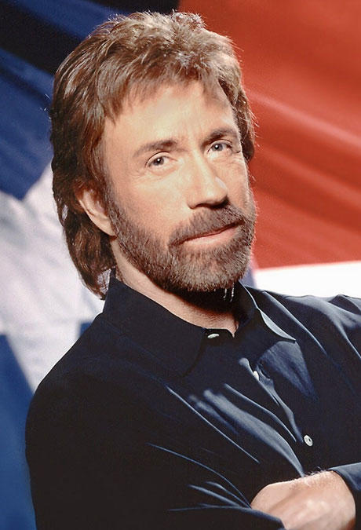

Welcome to Chuck Norris' Git repository

Chuck Norris: Legende
Chuck Norris, der mit bürgerlichem Namen Carlos Ray Norris heißt, ist vor allem durch seine Filmkarriere bekannt.
Vorwiegend war er in billig produzierten Actionstreifen zu sehen, in denen er den stereotypen amerikanischen Mann gab:
schweigsam, introvertiert, aber immer tatkräftig, wenn es darauf ankam.
Chuck Norris trat 1958 der US-Air-Force bei und
wurde nach Südkorea versetzt, wo er den Spitznamen Chuck erhielt, den er später als Künstlernamen behielt. In Südkorea hatte
er auch seinen ersten Kontakt mit den Kampfkünsten, namentlich Tang Soo Do.
Nach Ende seiner militärischen Dienstzeit 1962 konzentrierte er sich verstärkt auf die Kampfkünste und begann,
an Wettbewerben teilzunehmen.
Nach mehreren gewonnenen Wettkämpfen wurde er vom Karate-Magazin Black Belt zum "Kämpfer des Jahres" gewählt.
Diese Tatsache kam natürlich auch Bruce Lee zu Ohren.
Start your Tour